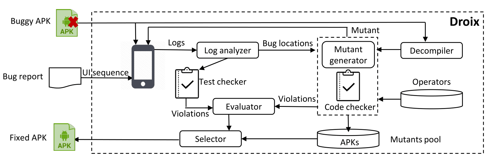

What is Droix?
Droix is an Android repair framework that automatically fixes crashes in Android apps. Given a buggy APK and an UI event sequence that crashes on the buggy APK, Droix uses a novel set of lifecycle-aware operators to produce a fixed APK. Figure below shows Droix's workflow

Download Droix
Download Droix on Github:Droix
Droixbench
To facilitate evaluation of crashes in Android apps, we introduce a new benchmark, Droixbench, a collection of 24 reproducible crashes in open-source Android apps.
Download Droixbench on Github:DroixBench
Subjects in Droixbench
| App name | Description | Version | LOC | Type | Testcase execution Time | Issue name |
|---|---|---|---|---|---|---|
| Transistor | radio players | 1.2.3 | 4201 | NullPointer | 42.1 | Bug-Report |
| 1.1.5 | 3569 | IllegalState | 40.1 | Bug-Report | ||
| Pix-art | photo editor | 1.17.1 | 53599 | NullPointer | 37.2 | Bug-Report |
| 1.17.0 | 60225 | NullPointer | 42 | Bug-Report | ||
| PoetAssistant | poet writing helper | 1.18.2 | 12469 | NullPointer | 42.3 | Bug-Report |
| 1.10.4 | 6363 | SQLite | 60.9 | Bug-Report | ||
| Anymemo | flashcard learning | 10.10.1 | 29238 | NullPointer | 50.5 | Bug-Report |
| 10.9.922 | 32710 | NullPointer | 83.9 |
Bug-Report | ||
| AnkiDroid | flashcard learning | 2.8.1 | 73213 | IllegalState | 50.6 | Bug-Report |
| 2.7beta1 | 72719 | ClassCast | 37.2 | Bug-Report | ||
| Fdroid | android app Repository | 0.103.2 | 50187 | IllegalState | 38.7 | Bug-Report |
| 0.98 | 38363 | SQLite | 37.3 | Bug-Report | ||
| yalp | android app Repository | 0.17 | 11218 | NullPointer | 57.4 | Bug-Report |
| LabCoat | GitLab client | 2.2.4 | 44763 | NullPointer | 49.2 |
Bug-Report |
| GnuCash | finance expense tracker | 2.1.4 | 41668 | IllegalArgument | 32 | Bug-Report |
| 2.1.3 | 40394 | NullPointer | 37.2 | Bug-Report | ||
| 2.0.5 | 37156 | IllegalArgument | 42.2 | Bug-Report | ||
| NoiseCapture | noise evaluator | beta 0.4.2 | 9983 | NullPointer | 42.5 | Bug-Report |
| beta 0.4.2 | 9983 | ClassCast | 41.2 | Bug-Report | ||
| ConnectBot | secure shell client | 1.9.2 | 26406 | IndexOutOfBounds | 57.4 | Bug-Report |
| k9 | email client | 5.111 | 114921 | NullPointer | 42.2 | Bug-Report |
| OpenMF | Mifosx android client | 1.0.1 | 75137 | IllegalState | 134.0 | Bug-Report |
| Transdroid | torrents manage client | 2.5.0-beta1 | 37198 | NullPointer | 45.9 | Bug-Report |
| Beem | communication tool | 0.1.7_rc1 | 20590 | NullPointer | 61.3 | Bug-Report |